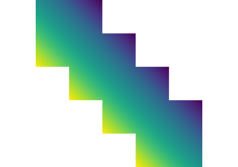
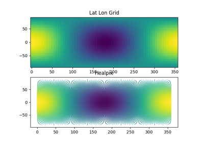
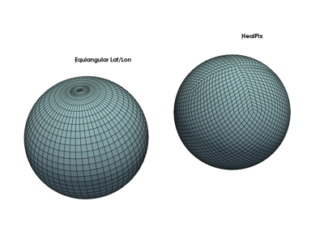

Examples¶
The examples are below
The examples in misc/ are not included in the Sphinx Gallery.

HealPIX Image visualization

HealPIX regridding

Plot grids with PyVista
The examples are below
The examples in misc/ are not included in the Sphinx Gallery.